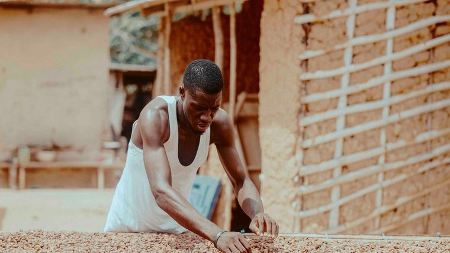
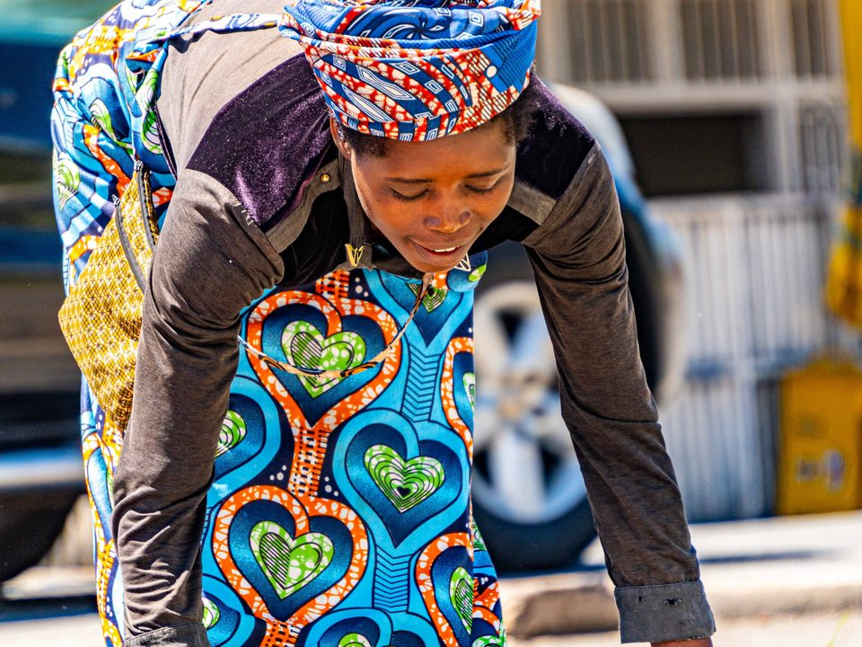
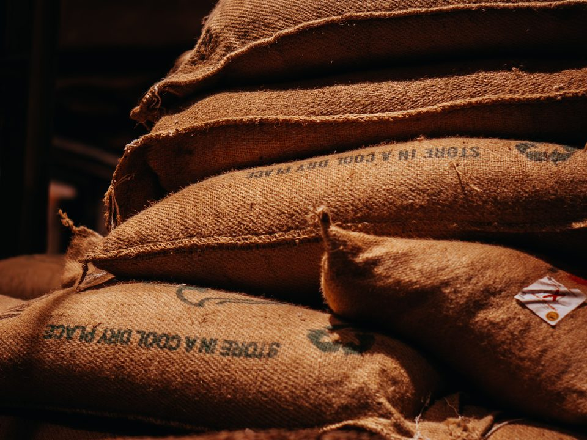
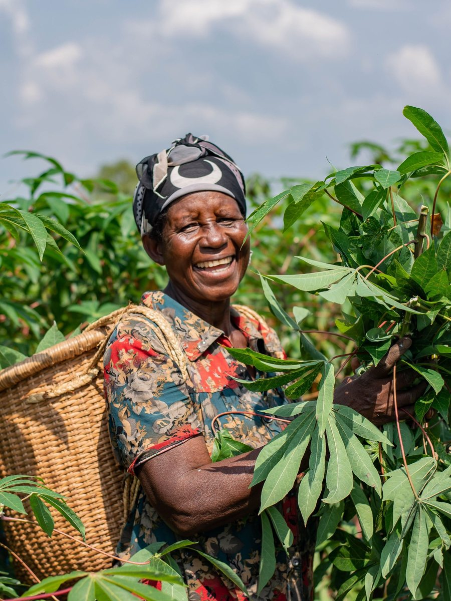

Why we publish
An institution earns authority by contributing to what a field understands.
Not by describing itself. Every piece here is built on research we did not fund, sourced so you can check it, and several of them reach conclusions that make our own work harder.

Smallholder lending
Smallholder lending asks neighbours to enforce repayment. In Malawi, a lender’s memory did the work.
What changed when the lender could remember who had paid.
Read
Seasonal credit
In the hungry season, Zambian farmers sell their labour to eat. One trial showed what happens when they do not have to.
A Zambian trial shows hungry-season loans move labour back to the household’s own farm.
Read
Agricultural insurance
Zambia insures a million farmers against drought. The cover was never built to protect a loan.
The cover is sized to the input subsidy and paid to the farmer, so a lender cannot count on it.
Read
Pension design
One pension scheme reached eighty million people. Another reached a hundred thousand. Both miss the smallholder farmer.
What flexible contributions did, and did not, change.
Read
Farmer registries
The registry knows who the farmer is. The lender needs to know what was sold.
Identity and activity are different problems, and only one of them has been solved.
Read
Food systems
The world set out to halve food loss. The number moved the other way.
What the index measures, and what it quietly leaves out.
Read
Gender and access
Same land, smaller harvest: the gender gap in farming is a gap in access
On the same size of land a woman grows less, and the reason is access, not ability.
Read
Rural finance
Warehouse receipts were meant to bank Africa’s farmers. Mostly, they bank its traders.
Two decades of records show who really uses them, and what has to come first.
Read
Farmer finance
Zambia’s smallholders are not too risky to bank. They are invisible.
Why so few reach formal credit, and what would actually change it.
Read